MyFitnessPal Case Study
Published: March 29, 2020
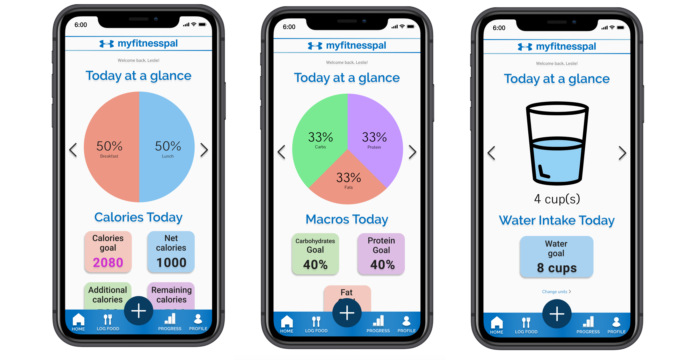Introduction
As a college student, working out seems almost necessary when you're constantly going out with friends or balancing extracurricular activities. To me, at least, working out is a big part of my daily lifestyle to be healthy from all that food, to relieve stress, and to look good.
MyFitnessPal is a fitness app that I use daily to track my calories for my gym life. As of 2019, it has over 50,000,000 downloads for it in the range of 325,000 total fitness apps available on mobile1. However, I've noticed that it has a cluttered and difficult-to-use interface. The main function isn't on the landing home page; it's filled with many blog posts and workout videos, and there's awkward grey spaces in between. For someone who wants to see quick data about their calories, the current design isn't as ideal.
 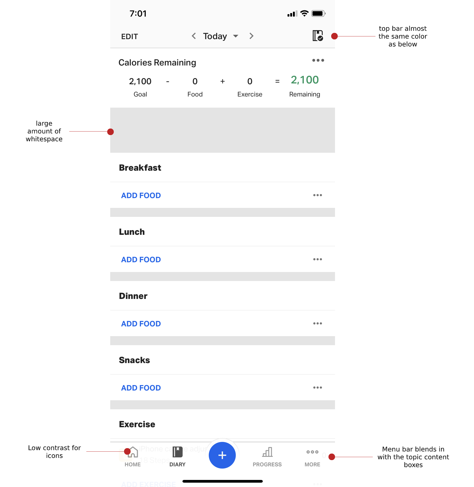
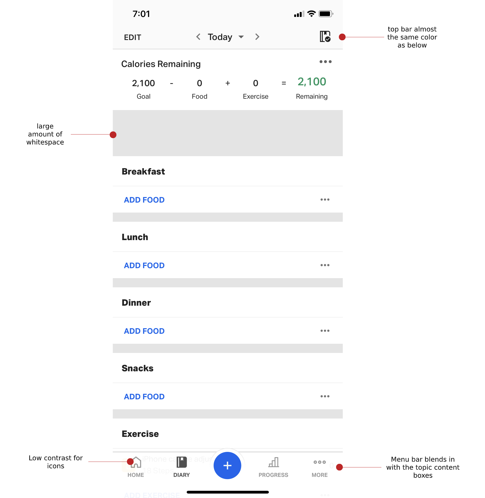
Current MyFitnessPal interface March 2020, v. 29.5.0. The home page blog image doesn't even show up!
Research
Before I could redesign, I asked myself what I was trying to solve. The interface wasn't
appealing, but how could I change it while keeping what MyFitnessPal was actually for? That lead
to the question: what (and who) is MyFitnessPal for? I gathered some data after reaching out to
some friends about the app.

I asked 11 of my friends, who range between early 20's to early 30's:
- What they use MFP for
- Why they use MFP over other ones (if this is their preferred fitness app)
- What they dis/liked about MFP
- What is their most/least used feature(s)?
- What feature(s) they found difficult to use
In my research, everyone had the same idea and recognition of what MyFitnessPal is: a fitness app to track your calories. They all did mention that the interface was difficult to navigate, especially if you are first-time user. First-time friends mentioned this struggle before familiarizing themselves. Moreover, 6 out of 11 people noted that they used the macronutrients breakdown feature to see details about their calories. Some liked that it had a food database to choose from, could scan food labels, and change water units. Most expressed negativity about the current interface, saying it is "unwelcoming" and it looks "too mechanical." About 9 out of 11 do not interact with the blog posts or exercise function. I realized I do not use any of these, either.
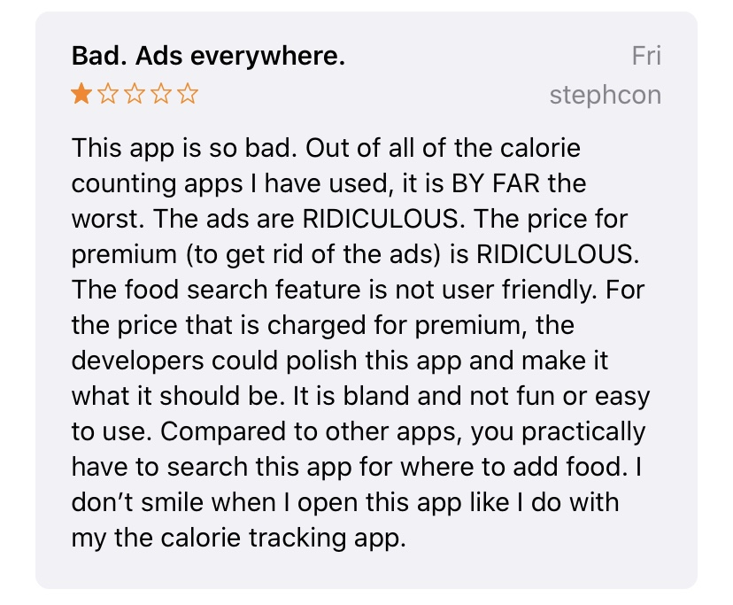 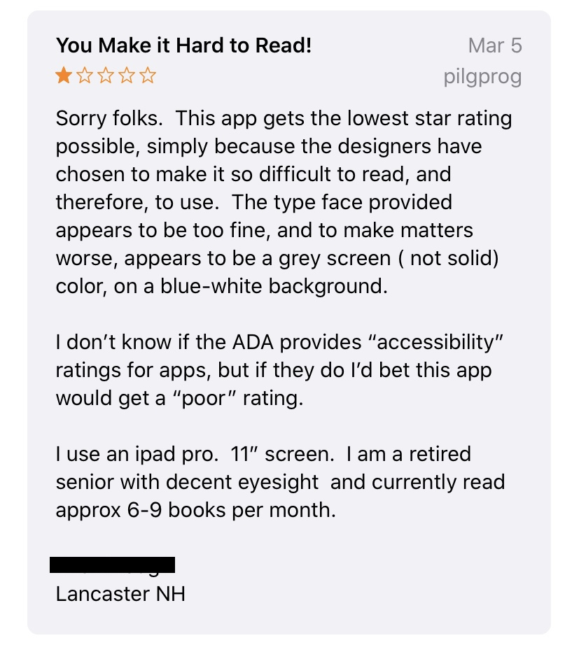In addition to my research, I read up on scholarly research articles about fitness apps. I wanted to see if specific designing influenced actual fitness progress. As it turns out, reinforcement and gamification in fitness apps aren't ideal; instead, it offers as a distraction2. Users may be less likely to stick with their goals. Thus, I decided to not include certain design aspects for the redesign, such as including a progress bar that fills up when calorie goals are added and reached. Being able to see the user's goals also helped the user to stick with and reach their goals. The visibility of goals increased the user's time exercising. The intensity and diversity of their workouts increased, as well 3.
So what makes MyFitnessPal different from other fitness apps?
It certainly offers a lot of features that other apps would consider "Premium." Other fitness or calorie-tracking apps, such as Calory, MyPlate Calorie Counter, Carb Manager: Keto Diet App, and Noom, all require some type of subscription in order to access important features that MFP otherwise would offer for free. For example, both Noom and Calory require a subscription to even use its' app. MFP also allows you to change units, whether it's for water, food, or weight. Other apps don't really offer what seems like this basic change, such as Calory and Carb Manager. MyFitnessPal also ranks the highest for usability and the most matches with USDA in their food database4.
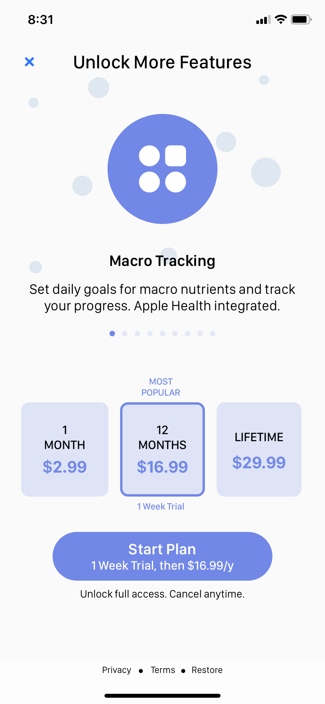 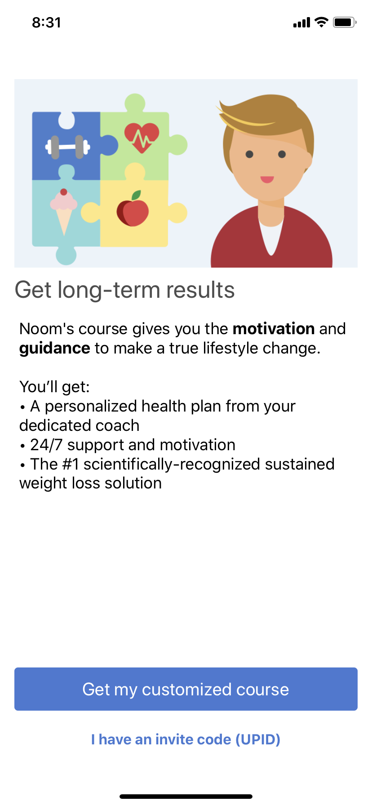 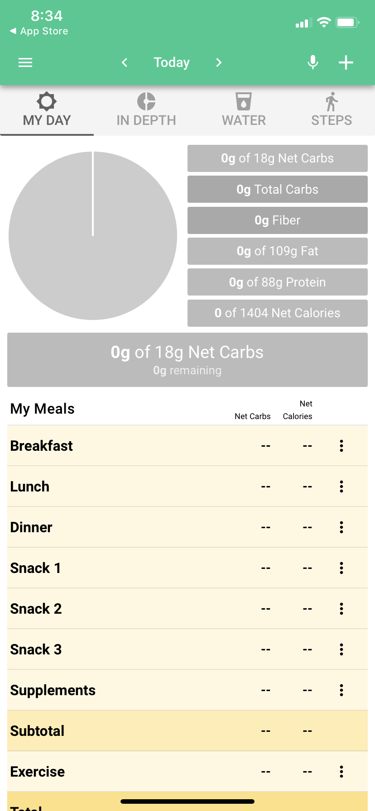Calory and Noom's sign-up pages, and Carb Manager's home page (respectively)
Design Process
I knew based off survey and statistical research data that it needed to include features that people liked, such as seeing their data quickly. As much as seeing it, accessing it quickly and easily was important. Overall, the main goal was to redesign it to make certain features look better and have easier accessibility, but to not take away from the fact that it is an app used to track calories.
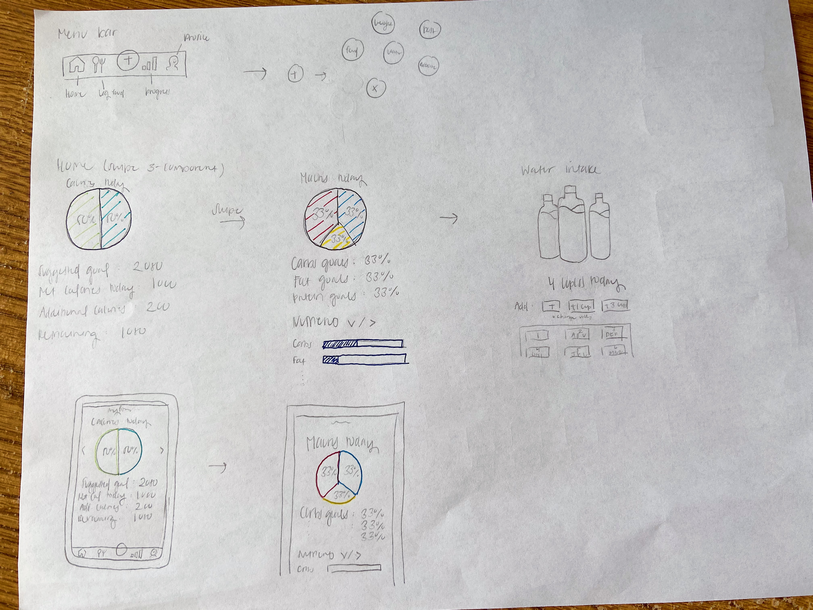 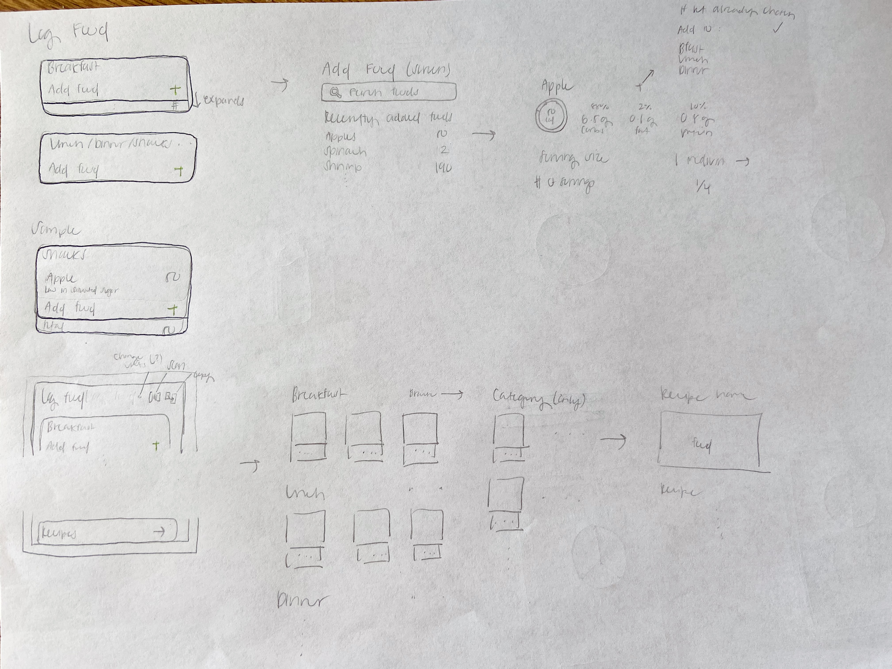I actually did not end up sticking to my drawings. I either kind of forgot about them (big mistake) or decided I didn't like how it turned out when it actually came to prototyping it. There were other features that I wasn't able to get to, as well.
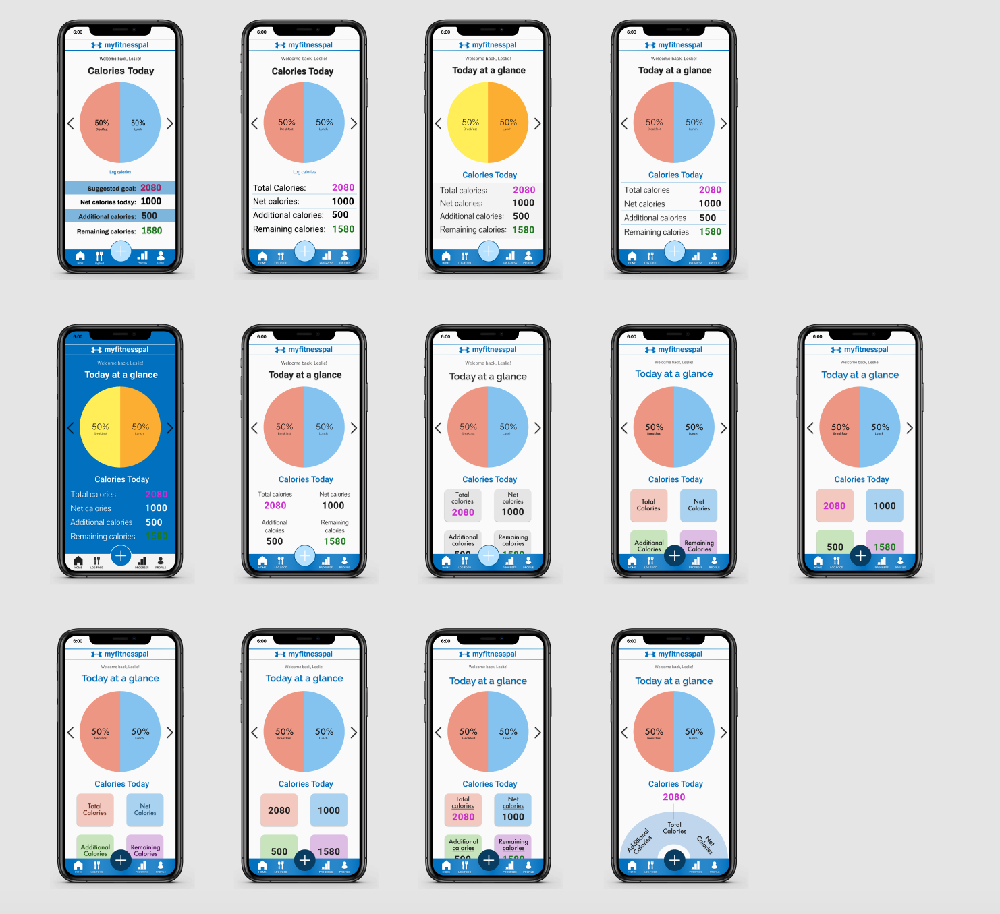I struggled a lot with making the home page because I felt like that mattered the most with first impressions, and I wanted users to continue using the app as long as it helped with efficiency and usability. I tried to keep in mind color-blind users, but it was a little challenging given that MyFitnessPal's brand color has blue, so I tried to make the contrast high enough. Ultimately, I decided to go with this design (below). Once I got the home page down, it was much easier to make the rest of the other pages.
Landing Page
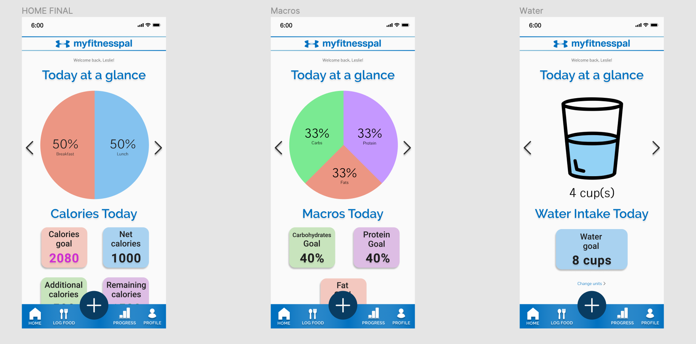I chose this design because it has everything you want to see quickly: your calories, macros, and your data at a glance on the home page. I kept in mind from the research that it was difficult to access goals, and seeing the user's goals would help the user stick with them long-term.

Log Food Page
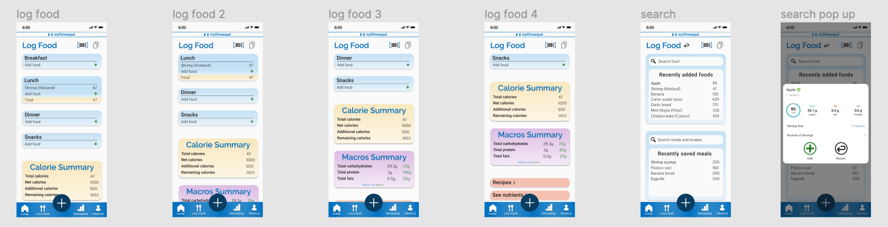I made the mistake of leaving out the day/week/month date for accessing food logs. I tried to keep the same color scheme as the home page, but went with a slight gradient for aesthetic. Even after seeing it, I actually still don't really like the look of it, but don't know how to improve it. I also feel like I should have played around with more designs. I made multiple pages of the same design to see what it would look like had it been able to scroll.

I put a summary for calories and macros because it would be easy to see the detailed breakdown where you already log your food. The same idea was kept for Search, having Items and Recipes and Meals in one page. The page overall includes Recipes and Nutrients, which seem to be features that users don't use often, but find helpful. I liked the interface and visual of the food item that MFP already has, so I incorporated it as a pop-up with an add and return button.

Adding Food


If I had more time, I would have added a Remove food function!
Conclusion
For my first case study, this was actually really challenging. As a newly-transferred college student who also switched majors to UX/UI, I haven't gotten the chance to take a Design class yet. Nonetheless, this learning experience was fun! As for the redesign, I hoped to have checked off the requirements that I was looking for: tracking calories and other features in a quick, accessible way. Putting goals where people can actually see them will help users stick with them and encourage them to achieve them.
Special thank you to Michelle and Anthony for helping me when I got stuck and hated all my designs.
Research Sources
- Ferrara, Giannina et al. “A Focused Review of Smartphone Diet-Tracking Apps: Usability, Functionality, Coherence With Behavior Change Theory, and Comparative Validity of Nutrient Intake and Energy Estimates.” JMIR mHealth and uHealth vol. 7,5 e9232. 17 May. 2019, doi:10.2196/mhealth.9232
- Wang, Qing et al. “Diet and Physical Activity Apps: Perceived Effectiveness by App Users.” JMIR mHealth and uHealth vol. 4,2 e33. 7 Apr. 2016, doi:10.2196/mhealth.5114